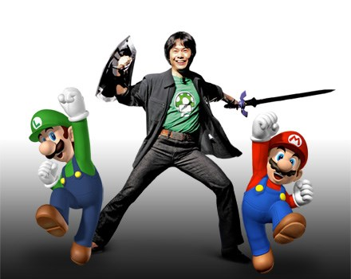

Shigeru Miyamoto is a video game designer and producer, widely considered one of the most influential figures in the gaming industry. He is the mind behind some of the most iconic franchises, such as "Super Mario," "The Legend of Zelda," and "Donkey Kong." His work has shaped the industry and brought joy to millions of players worldwide.
He is also my inspiration on why I am fascinated with games today and why I am very interested in making games in the future. There are a lot of gaming companies that make tons of games. But Miyamoto and his company are the ones that are stuck in my mind and remain an inspiration to me.
- Notable Games
- Super Mario Bros, The Legend of Zelda, and Donkey Kong
- Company
- Nintendo
- Awards
- Game Developers Choice Award for Lifetime Achievement, AIAS Hall of Fame